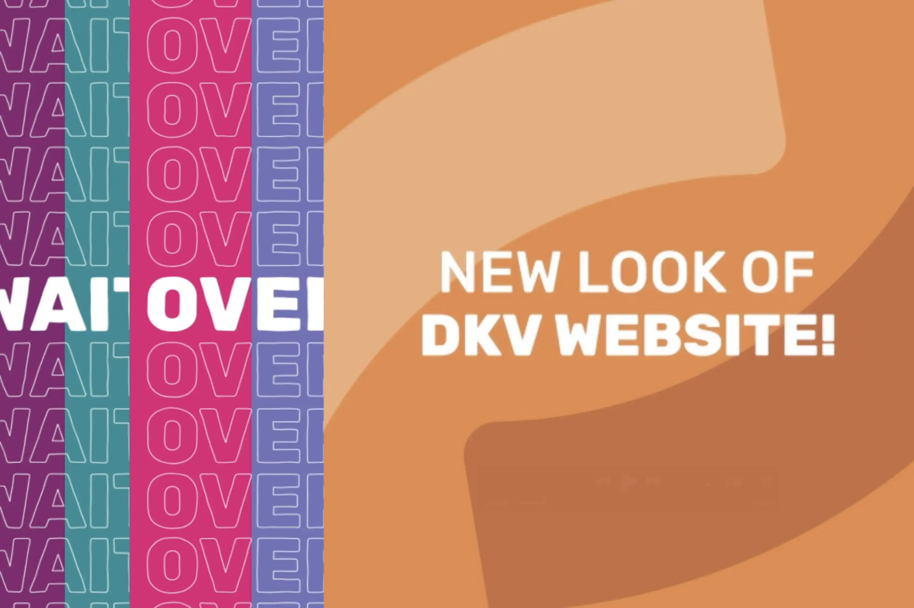
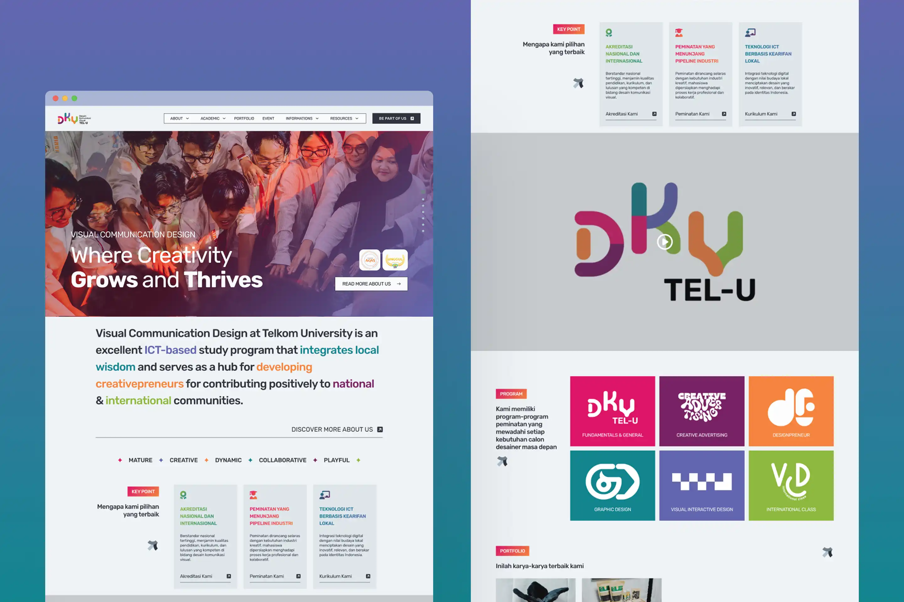
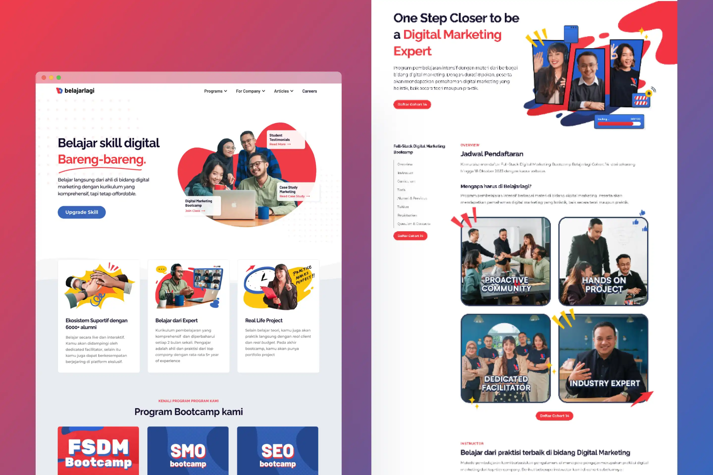
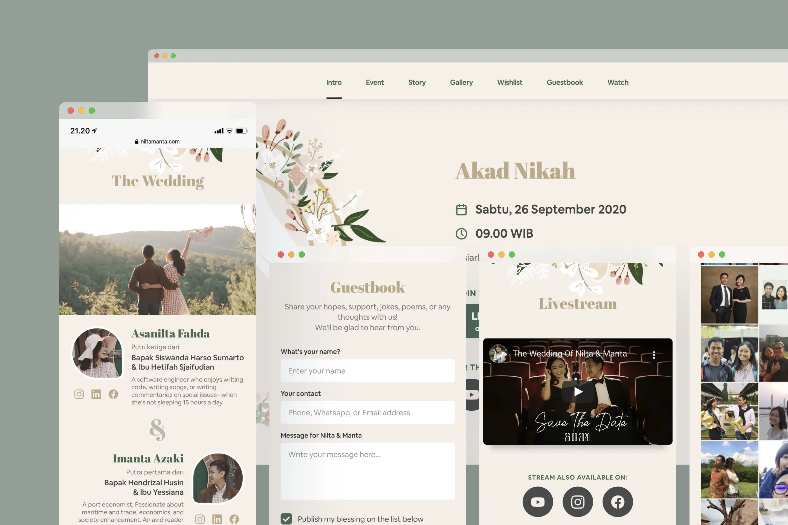
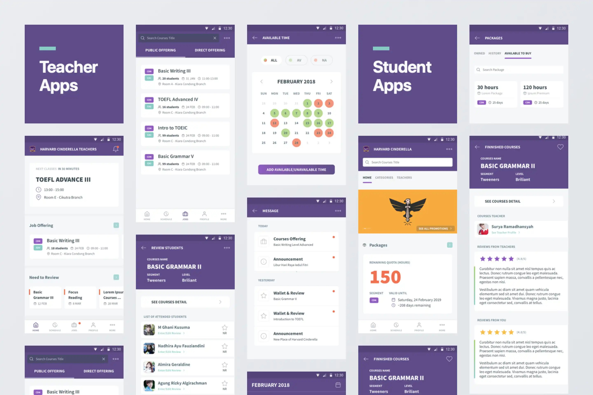

Selected work
Products shaped from brief to delivery.
Selected work across product management, experience design, and digital product development.

DKV Telkom Website Launch Video Mapping
An interactive video mapping piece created for the DKV Telkom University website launch.

DKV Telkom University Digital Transformation
End-to-end transformation of the website across UX/UI redesign, information architecture, technical rebuild, content development, and ongoing web operations

Asia Arts Festival Indonesia
Marketing Website for the Asia Arts Festival Indonesia 2025.

SIMPUSKAPA
Management system that helps users navigate operational processes from human resource, finance and programs.

Belajarlagi.id
Helping Belajarlagi.id revamping their website so their bootcamp informations could presented more concise with better flow

Renjana Wedding Website
Beautifully crafted Wedding Website that match with wedding theme and photoshoot.

@saatnyamenyublim
A merchandise product brand focused on cutesy yet functional products.

Re:TERRA
Game project for Master Thesis for helping people learn Collaborative Work.

Go Lieur Go
Game project blending playful mechanics and local storytelling.

Harvard Cinderella Mobile Apps
Building Mobile Apps for Teacher and Student.
No projects match that filter.
Reset filters